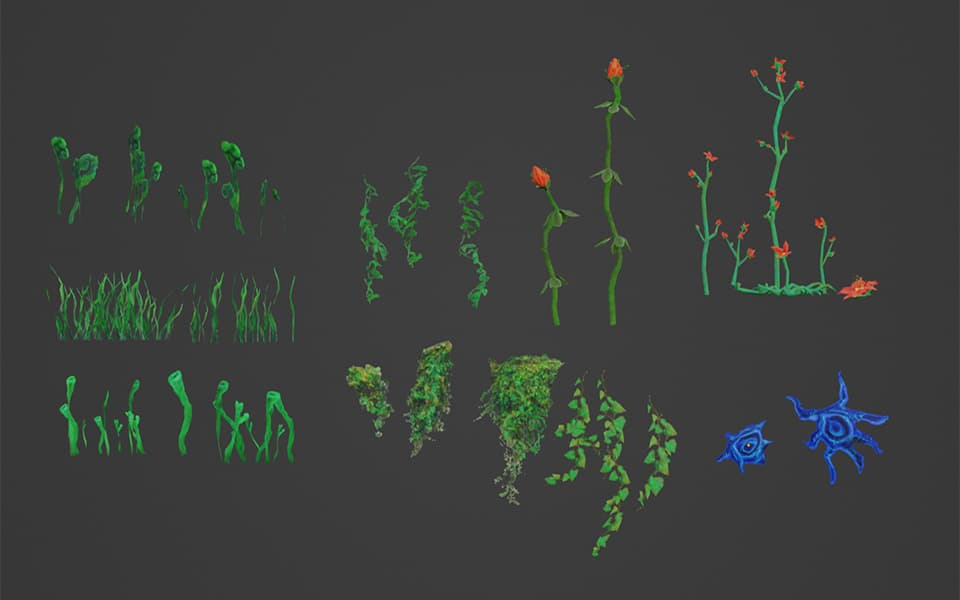
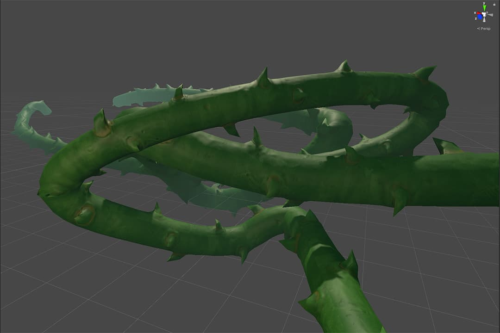
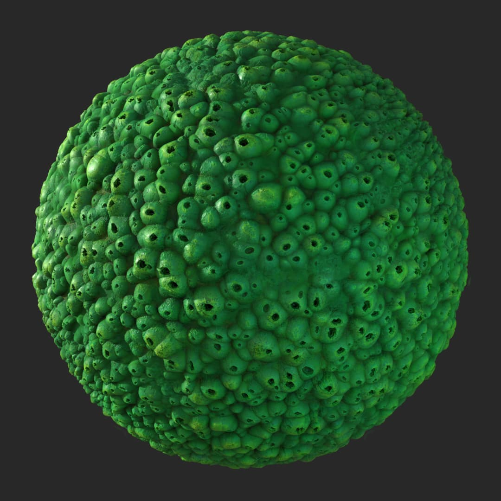
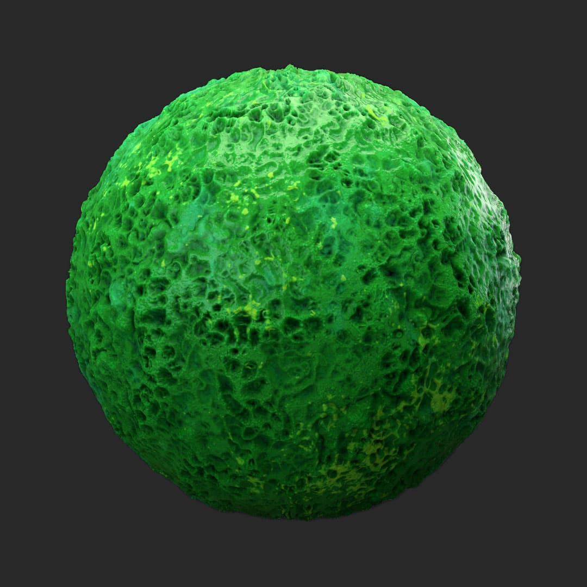
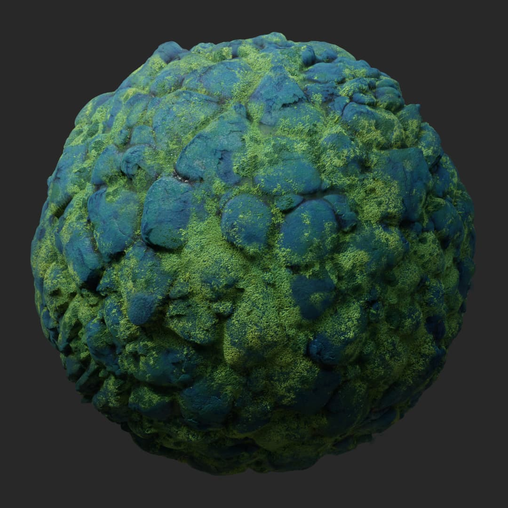

Unity
Blender
Substance 3D Designer
Substance 3D Painter
Practice where I created a small Unity map inspired by Metroid. This was to learn to model and material workflows in Unity. It was designed to be a VR map for Oculus Quest 2. Models were created in Blender, and textures were created in Adobe Substance 3D Designer and Painter.
Unity scene
Foliage in Blender
Thorns in Unity scene. These were created using the SplineMesh plugin that allows mesh tiling on bezier curves.
  